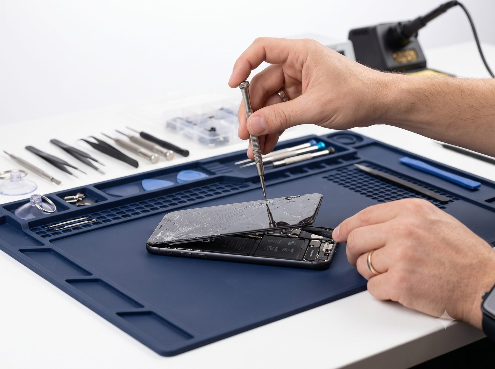
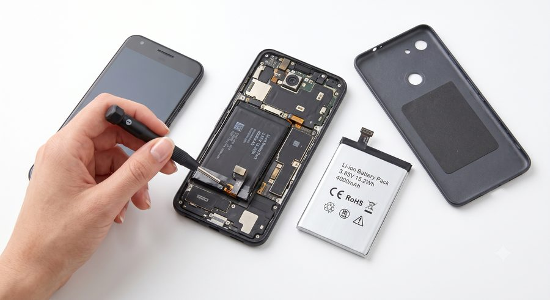
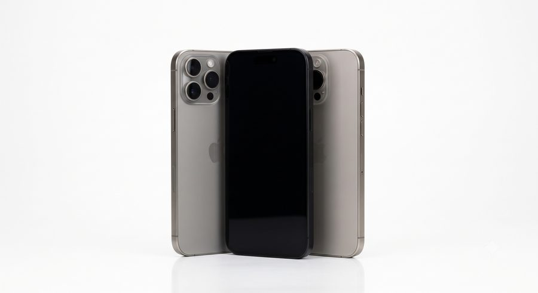
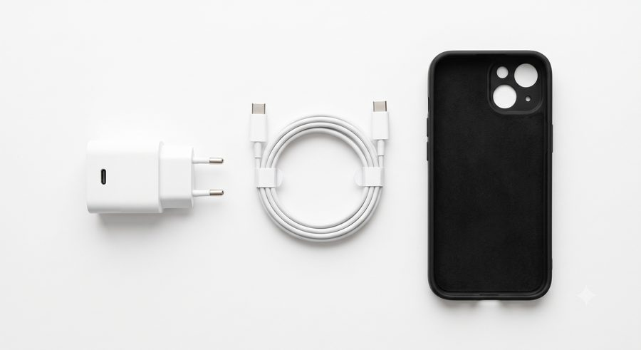

Réparation express
Écran cassé ?
Écran cassé ?
On répare
votre téléphone
Smartphones et tablettes au cœur de Montgallet, métro Reuilly-Diderot
Appeler le 01 75 51 02 15
TP

Réparation d'écran

Batterie & charge

Vente de téléphones

Accessoires
Seconde vie
Reprise et reconditionnement : on donne une seconde vie à vos appareils.
service à confirmerGarantie
Nos réparations sont garanties, pièces et main-d'œuvre.
durée à confirmerNous trouver
73 rue de Reuilly, 75012 Paris
Métro Reuilly-Diderot (L1, L8)
Ouvert du lundi au samedi
Nos services
Réparation, vente et accessoires à Paris 12
Diagnostic gratuit sur place et devis clair avant toute intervention. On vous dit tout de suite ce qu'il en est.
Ce qu'on répare
- Écran : vitre fissurée, tactile qui ne répond plus, affichage cassé (smartphone et tablette).
- Batterie et charge : autonomie en chute, appareil qui ne charge plus, connecteur.
- Pannes diverses : boutons, haut-parleur, caméra, désoxydation après contact avec l'eau.
- Marques prises en charge : à confirmer (Apple, Samsung, Xiaomi…)
Vente, accessoires et tarifs
- Vente : smartphones et tablettes, neufs ou reconditionnés.
- Accessoires : coques, verres trempés, chargeurs, câbles, écouteurs.
- Délai moyen : à confirmer
- Tarifs : grille « à partir de » à confirmer
À valider ensemble : marques réparées, garantie et sa durée, délai moyen par panne, quelques prix « à partir de », et l'ouverture du dimanche. Une fois confirmés, ils remplacent ces mentions.
★★★★★
« Tablette Samsung à l'écran cassé réparée sans traîner, par un technicien rapide et sympa. »Avis client Google, réparation de tablette (témoignage reformulé)
Nous trouver
Venir & nous joindre
73 rue de Reuilly, 75012 Paris
Métro Reuilly-Diderot (lignes 1 et 8)
Numéro relevé sur les annuaires, à confirmer avant diffusion large.
Horaires
| Lundi au vendredi | 10h - 20h |
| Samedi | 10h - 20h |
| Dimanche | à confirmer |